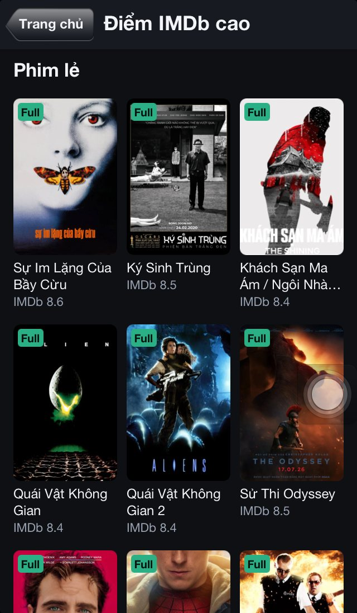

Côn Bằng TV Legacy
Xem phim từ nhiều trang phim, gom về một trang chủ — cho iPhone / iPad iOS 5 và iOS 6



Có gì
- Trang chủ gom phim mới từ nhiều trang, Xem tiếp, Có tập mới, Điểm IMDb cao, Thể loại / Quốc gia
- Phát bằng chip giải mã của máy (HLS bỏ quảng cáo chèn, MP4), nhớ chỗ xem, chọn tập khi đang xem, phụ đề, chọn chất lượng
- Phim Âu Mỹ 4K (dexter.pw): phim lẻ, phim bộ chia mùa, phụ đề tiếng Việt / tiếng Anh
- Truyền hình và radio: tự thêm danh sách kênh M3U của mình, lịch phát sóng, nhắc giờ, kênh thể thao theo giờ trận, nghe radio cả khi khoá máy
- Thu nhỏ trình phát trong app (iPad: khung ở góc; iPhone: thanh ở đáy, kéo lên thành khung nổi); hình nổi trên màn hình chính / app khác (iOS 6 / iOS 8 đã jailbreak — gói «Hình nổi»)
- Tìm trên mọi trang, theo dõi phim, phim liên quan, đổi nguồn khi phim có ở nhiều trang
- Nhiều người xem, mã PIN, hồ sơ trẻ em, giới hạn giờ xem, xem riêng
- Đồng bộ trong nhà với Côn Bằng TV trên tivi, Windows, iPad mới
- DNS mã hoá, vượt chặn (3 mức), proxy SOCKS5 / Shadowsocks
- Tự cập nhật trong app (hoặc qua Cydia)
Mới trong bản 0.6.0
- Giao diện mới kiểu iOS 26: nút tròn / bo tròn bằng kính, tiêu đề lớn, biểu tượng vẽ mới, nền tối sâu hơn
- Thanh tab nổi: Trang chủ, Truyền hình, Theo dõi, Cài đặt và nút tìm tròn — iPhone ở đáy màn hình (cuộn xuống thu thành một nút tròn), iPad ở giữa mép trên
- Trình phát thu nhỏ trên iPhone nằm trên thanh tab; kéo hình lên vẫn thành khung nổi
- Trang phim: nền ảnh bìa làm mờ, nút «Xem» lớn, nút tròn «Theo dõi», ô tập bo tròn
- Trình phát: các nút tròn ở giữa hình, thanh tua trong viên kính, bảng chọn tập và menu ⋯ dạng thẻ kính; trình phát kênh truyền hình cũng đổi theo
- Cài đặt có biểu tượng màu và công tắc mới; hộp thoại, bảng chọn kiểu mới
- iPad 1 (256 MB) bỏ bóng đổ và nền mờ để giữ mượt. Gói «Hình nổi» 0.3.0 vẫn dùng được
Bản 0.5.11
- Thu nhỏ trên iPhone: đang xem phim hoặc kênh, bấm ⌄ (hoặc vuốt xuống trên hình phim) — trình phát thành thanh ở đáy màn hình: hình nhỏ, tên phim + tập, phát / tạm dừng, ✕, vạch đã xem. Cả app co lên trên thanh nên không che gì; gõ phím thì thanh nổi lên trên bàn phím. Chạm thanh để mở lại, vuốt xuống hoặc ✕ để đóng (lưu chỗ xem)
- Kéo hình lên thành khung nổi: kéo hình trên thanh lên — thành khung nhỏ ở góc màn hình (kéo sang góc khác được, tự né bàn phím); kéo khung xuống mép dưới để về lại thanh. App nhớ kiểu chọn lần trước
- Trình phát trên iPhone: nút «Thu nhỏ» / «Hình nổi» thành biểu tượng cho đỡ chật. Thu nhỏ có trên mọi máy RAM từ 512 MB (iPhone 4 / 4S / 5, iPod touch 5, iPad mini…)
- Hình nổi 0.3.0: khung trên iPhone nhỏ lại cho đỡ che màn hình chính; chạm hai lần để đổi cỡ nhỏ / lớn. Cập nhật gói «Côn Bằng TV Legacy — Hình nổi» ở cùng nguồn này, rồi khởi động lại SpringBoard
Bản 0.5.10
- Hình nổi chạy cả iOS 6 (trước chỉ iOS 8): cài gói «Côn Bằng TV Legacy — Hình nổi» 0.2.0 ở cùng nguồn này (mục Tweaks), khởi động lại SpringBoard — đang xem phim / kênh bấm «Hình nổi», video thành khung nhỏ nổi trên màn hình chính và mọi app khác. iPad 1 / iOS 5 không có
- Khung nổi bo tròn 4 góc, viền kính mờ (iOS 8 làm mờ thật phần màn hình bên dưới, iOS 6 viền kính trong)
- Sửa: trên iOS 6 khung nổi hiện ở góc trên thay vì góc dưới
- Biểu tượng mới: ô kính vuông bo tròn 4 góc, vẫn chất kính trong suốt, vòng vàng và ấn chữ 鵬
Bản 0.5.9
- Hình nổi (iOS 8 đã jailbreak): đang xem phim hoặc kênh truyền hình, bấm «Hình nổi» — app về màn hình chính, video thành khung nhỏ nổi trên màn hình chính và trên mọi app khác. Chạm khung để mở lại app, phát tiếp đúng chỗ; ✕ để đóng (lưu chỗ xem); kéo khung sang góc khác; khoá máy thì khung tự đóng
- Cần cài thêm gói «Côn Bằng TV Legacy — Hình nổi» ở cùng nguồn này (mục Tweaks), rồi khởi động lại SpringBoard. Chưa cài gói thì nút không hiện; không có ở radio, ẩn khi người xem đang bị giới hạn giờ xem
Bản 0.5.8
- Trình phát thu nhỏ (iPad): đang xem phim hoặc kênh truyền hình, bấm «Thu nhỏ» — hình vào khung nhỏ ở góc màn hình, vẫn phát trong lúc lướt trang chủ, tìm phim, mở trang phim khác. Chạm khung để mở lại toàn màn hình, ✕ để đóng, kéo khung sang góc khác. Có trên iPad mini và iPad RAM ≥ 512 MB (iPad 1 không có)
- Hộp thoại nhanh hơn nhiều trên iOS 8: các hộp hỏi / báo hiện gần như tức thì thay vì mất gần một giây; iOS 5 / 6 giữ hộp thoại quen thuộc
- Các hộp nối nhau (vd «Thêm danh sách kênh» → «Nhập địa chỉ») mở ngay, không phải chờ
Bản 0.5.7
- Cuộn mượt hơn nhiều ở trang chủ, hàng phim, lưới phim và lưới kênh Truyền hình — đo trên iPad mini 1: trang chủ từ ~14 lên ~55 khung hình/giây; trên iPad 1: từ ~6 lên ~48
- Chạm phản hồi nhanh hơn: mở trang phim, quay về trang chủ không còn khựng trước khi trượt; ảnh đang tải không làm chạm bị trễ
- Giao diện giữ nguyên; sửa chữ viết tắt tên kênh lòi ra sau logo trong suốt; máy có tinh chỉnh chế độ tối (như Eclipse) vẫn giữ đúng màu nhãn «kkphim», «TRỰC TIẾP»
Bản 0.5.6
- Sửa «Thêm danh sách kênh» (Truyền hình › Cài đặt): ở 0.5.5 bấm «Nhập địa chỉ (http…)» hay «Gửi tệp từ máy tính» đều ra hộp chọn tệp — giờ mỗi nút làm đúng việc của nó; chọn tệp trong danh sách cũng đã được
- Địa chỉ sai không còn bị thêm vào: app tải thử danh sách trước (có nút Huỷ), chỉ thêm khi đọc được kênh. Sai tên miền, máy chủ không trả lời, link trang web hay link phát của một kênh thì báo rõ lý do kèm nút «Sửa địa chỉ»; danh sách đang xem giữ nguyên
- Gõ thiếu «http://» thì app tự thêm; nhập lại địa chỉ đã có thì app chọn lại danh sách đó
Bản 0.5.5
- 📻 Radio: nghe các đài MP3 / AAC / HLS trong danh sách kênh, hiện tên bài đang phát; tắt màn hình, khoá máy vẫn nghe tiếp, điều khiển và xem tên bài ngay trên màn khoá
- Thêm danh sách kênh từ tệp .m3u: gửi từ máy tính qua Wi-Fi (app hiện địa chỉ để mở bằng trình duyệt trên máy tính), chọn tệp có sẵn trên máy, hoặc «Mở bằng» từ Mail / Filza
- Phát được luồng TS liền của các gói IPTV kiểu Xtream; kênh tiếng MP2 phát hình không tiếng; kênh hình xen kẽ của đài phát sóng (1080i) mà máy không giải mã được thì app báo rõ thay vì quay mãi
- Tên kênh bỏ mã nước kiểu «|UK| »; kênh có link chuyển tiếp / không đuôi được nhận dạng trước khi phát
Bản 0.5.4
- Sửa lỗi thỉnh thoảng mở app xong thì không tải được gì (danh sách kênh, trang chủ đứng im; có khi báo «Không mở được cổng 8791») — gặp trên máy hai nhân như iPhone 5, iPad mini
- Truyền hình tự làm mới danh sách kênh khi đang mở màn Truyền hình hoặc quay lại app: danh sách thường 6 giờ, danh sách có trận 30 phút, trận sắp / đang đá mà chưa có link thì 5 phút
- Kênh hỏng hết nguồn (link hết hạn) thì app tự tải lại danh sách tìm link mới rồi thử lại; nút «Thử lại» cũng vậy
- Phát được kênh có địa chỉ không đuôi .m3u8 (link chuyển tiếp — vd vài kênh VTV), trước luôn báo «không phát được»
- Sửa «Vượt chặn nhà mạng» Mức 1 / Mức 2 thực ra không bật (máy đã chọn sẽ tự đúng lại khi mở app)
Bản 0.5.3
- Truyền hình (IPTV): chip «Truyền hình» ở trang chủ. App không kèm sẵn kênh — tự thêm địa chỉ danh sách M3U / M3U8 mà mình có quyền xem (Cài đặt › Dữ liệu › Truyền hình). Kênh theo nhóm, tìm / gõ số kênh, ★ yêu thích, «Kênh vừa xem»
- Lịch phát sóng (XMLTV ghi trong danh sách hoặc tự đặt): chương trình đang phát / kế tiếp, «Nhắc tôi» 5 phút trước giờ phát
- Trình phát trực tiếp toàn màn hình: «☰ Kênh», vuốt lên / xuống đổi kênh, tạm dừng rồi «Về trực tiếp», nguồn lỗi tự sang nguồn khác
- Kênh thể thao: đọc giờ trận trong tên kênh — trận đang đá lên đầu, «Sắp đá 20:00 · còn 25 phút», «Nhắc lúc bóng lăn»; trận đang đá mà kênh chưa lên sóng thì tự thử lại. Phát được luồng FLV và luồng cần User-Agent / Referer riêng
Bản 0.5.2
- Tập chỉ có bản quá khổ (vd KKPhim Tiên Nghịch tập 166–167: 2542×1080 — máy iOS 5 / 6 chỉ giải mã tới 1920×1080): app báo ngay và gợi ý xem ở trang khác hoặc trong Venetium, không còn chờ gần một phút rồi báo lỗi -11819
- Tập trang đã thêm tên nhưng chưa có video (máy chủ phim báo 404): báo đúng như vậy, kèm nút «Báo khi xem được»; «Báo khi xem được» không còn báo nhầm «Đã xem được» trong hai trường hợp trên
- «Mở trong Venetium» với tập NguonC: mở trang phim của NguonC (trước bị Cloudflare chặn), kèm lời nhắc tắt «Chặn quảng cáo» của Venetium cho trang đó — trình phát NguonC dừng video khi thấy chặn quảng cáo
Bản 0.5.1
- iPad iOS 5: trình phát (và màn «Ai đang xem?») xoay ngang / dọc theo máy — bản 0.5.0 bị giữ dọc
- Chất lượng: không mở bản máy không phát được — vd «1080p» của vài phim khổ siêu rộng (dexter.pw) là 2592×1080, vượt khả năng giải mã của máy đời iOS 6 (trước báo lỗi -11848); đặt 1080p thì app tự phát 720p và báo cho biết. Mục «Chất lượng» chỉ liệt kê bản máy phát được
Bản 0.5.0
- Chạy được trên iOS 5 (5.0 – 5.1.1) — cùng một gói với iOS 6. Đã thử trên iPad 1 (iOS 5.1.1): trang chủ, tìm kiếm, trang phim, phát phim (cả phụ đề, chọn chất lượng), đồng bộ, tự cập nhật
- Máy RAM ít (iPad 1, iPhone 4): mở trình phát thì app nhả bớt ảnh bìa để iOS không tắt app giữa chừng
- Ảnh bìa tải nhanh hơn, mở app nhanh hơn trên máy chậm; ảnh của trang bị nhà mạng chặn tên miền tải qua DNS mã hoá / vượt chặn
Cần gì
- iOS 5.0 trở lên (iOS 5 và iOS 6), đã jailbreak — đã thử trên iPhone 5 (iOS 6.1.4), iPad mini 1 (iOS 6.1.3) và iPad 1 (iOS 5.1.1)
- Khoảng 25 MB trống, Wi-Fi
Miễn phí, không tài khoản. App chỉ là trình xem các trang phim công khai: không lưu trữ, không tải lên, không phát tán phim. Mã nguồn: GitHub · Trang giới thiệu: conbangtvlegacy.github.io · Góp ý: t.me/tivikit